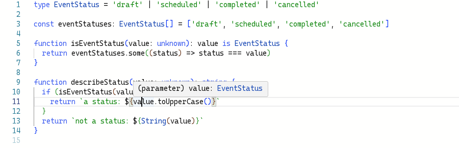

React + TypeScript · Part 1 · Session 3 of 26 · 3 hours
Session 3
Functions, Generics and Typing Real Data
Functions with contracts, generics with labels, and the app's first checked data.
Today
Three hours, two lessons
| 0:00 | Warm-up: Session 2 retrieval |
| 0:15 | 2.3 Functions and Generics: model, demo |
| 0:45 | 2.3 Guided lab, project start |
| 1:20 | Break (10 min): start the API |
| 1:30 | 2.4 Typing Real Data: model, demo, lab |
| 2:15 | 2.4 The HQ meets its data (35 min) |
| 2:50 | Exit ticket, homework, Checkpoint 1 next time |
LABS Lab files are in
labs/module-03. Work in starter/, never the solution.Warm-up · 9 minutes
Four questions from Session 2
const flats = { terrain: 'marsh' }as a Site: why TS2345?spotsTaken || 'unknown'with 0?- The type of
JSON.parse(text), and what we write instead - The discriminant of LoadState
2.3
Functions and Generics
One function, any type, every check kept.
2.3 · Mental model
The job card
- Bring: 2 buckets, 1 grabber each → the parameters
- Hand in: a bag count → the return type
- TypeScript checks both, at the table
- Write the card for functions other code relies on
2.3 · Live demo
TypeScript counts
function spotsLeft(capacity: number, taken: number): number { return capacity - taken } console.log(spotsLeft(18, 11)) console.log(spotsLeft(18)) console.log(spotsLeft(18, '11'))
scratch.ts:6:13 - error TS2554: Expected 2 arguments, but got 1. scratch.ts:7:27 - error TS2345: Argument of type 'string' is not assignable to parameter of type 'number'. Found 2 errors in the same file, starting at: scratch.ts:6
WHY Node prints 7, NaN, 7: JavaScript does not count.
2.3 · Live demo
Optional, default, rest
Weekend Cove Cleanup Weekend Cove Cleanup (Port Marisol) 4 spots left 1 spot left 45
WHY Hover:
(left: number, unit?: string) => string. Optional ones go last (TS1016).2.3 · Live demo
An options object
function eventLine( event: CleanupEvent, { showStatus = false, prefix = '-' }: LineOptions = {}, ): string
scratch.ts:16:78 - error TS2561: Object literal may only specify known properties, but 'showTwon' does not exist in type 'LineOptions'. Did you mean to write 'showTown'? Found 1 error in scratch.ts:16
WHY Destructured with defaults: React props in Lesson 3.2.
2.3 · Live demo
Functions as values
type EventFormatter = (event: CleanupEvent) => string
scratch.ts:27:31 - error TS2322: Type 'number' is not assignable to type 'string'. scratch.ts:28:20 - error TS2345: Argument of type '(title: string) => string' is not assignable to parameter of type 'EventFormatter'. Found 2 errors in the same file, starting at: scratch.ts:27
WHY Fewer parameters fit. The wrong return type does not.
2.3 · Mental model
The labeled bin
- One bin design, a blank label holder
first<T>(items: T[]): T | undefined- T is read from what you put in first
- Then TypeScript holds you to it
RULE Honest: an empty list has no first item.
2.3 · Live demo
any versus T
console.log(firstAny(sites).nmae) // any: undefined console.log(site?.nmae) // T = Site
scratch.ts:18:19 - error TS2339: Property 'nmae' does not exist on type 'Site'. Found 1 error in scratch.ts:18
WHY Generics: the reuse of any, with every check.
2.3 · Live demo
A constraint
function findById<T extends { id: string }>(items: T[], id: string): T | undefined
scratch.ts:22:22 - error TS2345: Argument of type 'number[]' is not assignable to parameter of type '{ id: string; }[]'.
Type 'number' is not assignable to type '{ id: string; }'.
Found 1 error in scratch.ts:22
WHY extends reads: has at least.
2.3 · Screenshot
T and K, inferred
![The TypeScript Playground editor showing the groupBy function and the line const byStatus = groupBy(events, (event) => event.status). A hover pop-up over groupBy reads: function groupBy<CleanupEvent, EventStatus>(items: CleanupEvent[], keyOf: (item: CleanupEvent) => EventStatus): Map<EventStatus, CleanupEvent[]>.](../../images/lesson_05/05-hover-generic.png)
2.3 · Live demo
A path that returns nothing
scratch.ts:3:44 - error TS2366: Function lacks ending return statement and return type does not include 'undefined'. Found 1 error in scratch.ts:3
WHY A return type makes TypeScript insist on every status.
2.3 · Predict, then check
Defaults and a missing argument
function bagsLine(bags: number, label = 'bags', note?: string): string { return note === undefined ? `${bags} ${label}` : `${bags} ${label} (${note})` } console.log(bagsLine(3)) console.log(bagsLine(1, 'bag', 'heavy')) console.log(bagsLine())
npm run check: ? node scratch.ts: ?
WHY Write both predictions. Then P2: an honest generic.
2.3 · Guided lab · 15 minutes
The crew's shift helpers
labs/module-03/l2_3-functions-and-generics/starter- Task 1:
HoursOptions, defaults,...hours - Task 2:
type ShiftFormatter = (shift: Shift) => string - Done:
ℹ fail 0and a silent check
MORE Finished? Task 3:
lastOf, sumBy, indexById.2.3 · Project
The crew's helper functions
ts-lab/functions.ts
function pluralize(count: number, word: string, plural = `${word}s`): string {
PROJECT Steps 1 and 2 in class; Steps 3 to 6 at home: twenty lines of output.
10
Break
Back at 1:30. Start the API: node server.ts.
2.4
Typing Real Data
Outside data is unknown until checked.
2.4 · Mental model
One roster on the board
exportonce in shapes.tsimport type { CleanupEvent } from './shapes.ts'- Change it in one place; TypeScript points at what breaks
- Course style: named exports for everything we add
2.4 · Live demo
Without type
import { CleanupEvent, Volunteer } from './shapes.ts'
functions.ts:4:10 - error TS1484: 'CleanupEvent' is a type and must be imported using a type-only import when 'verbatimModuleSyntax' is enabled. SyntaxError: The requested module './shapes.ts' does not provide an export named 'CleanupEvent'
WATCH Node stripped the types: nothing to import at run time.
2.4 · Live demo
A boolean does not narrow
function isEventStatus(value: unknown): boolean
scratch.ts:11:25 - error TS18046: 'value' is of type 'unknown'. Found 1 error in scratch.ts:11
WHY TypeScript does not read function bodies.
2.4 · Live demo
A type predicate
function isEventStatus(value: unknown): value is EventStatus {
a status: SCHEDULED not a status: finished not a status: 42 [ 'draft', 'scheduled' ]
WHY When it returns true, the value IS an EventStatus. filter narrows too.
2.4 · Screenshot
Narrowed by the guard

2.4 · Mental model
The sign-in table
- Outside data → unknown
- The guard checks it against the roster
- Typed past the table, or rejected
getJSON(path, isT): one table, many rosters
WATCH A guard is a promise TypeScript cannot check.
2.4 · Live demo
Types from types
type Contact = Pick<Volunteer, 'name' | 'phone'> type EventEdit = Partial<CleanupEvent> type StatusCounts = Record<EventStatus, number>
scratch.ts:25:25 - error TS2353: Object literal may only specify known properties, and 'id' does not exist in type 'Contact'.
scratch.ts:26:29 - error TS2322: Type 'string' is not assignable to type 'number'.
scratch.ts:27:7 - error TS2741: Property 'cancelled' is missing in type '{ draft: number; scheduled: number; completed: number; }' but required in type 'StatusCounts'.
Found 3 errors in the same file, starting at: scratch.ts:25
WHY Record over a union: every key, every time.
2.4 · Live demo
items[0], made honest
scratch.ts:4:3 - error TS2322: Type 'T | undefined' is not assignable to type 'T'. 'T' could be instantiated with an arbitrary type which could be unrelated to 'T | undefined'. scratch.ts:7:13 - error TS2532: Object is possibly 'undefined'. Found 2 errors in the same file, starting at: scratch.ts:4
WHY noUncheckedIndexedAccess. Loops are not affected.
2.4 · Environment variables
VITE_API_URL
shoreline-hq/src/vite-env.d.ts
interface ImportMetaEnv { /** Where shoreline-api runs, such as http://localhost:4000 */ readonly VITE_API_URL?: string }
.env.examplein Git ·.env.localyours- Only VITE_ names reach the code, pasted into the build
WATCH Nothing in the front end is secret.
2.4 · Predict, then check
Pick, and an extra property
import type { Volunteer } from './shapes.ts' type PhoneEdit = Pick<Volunteer, 'id' | 'phone'> const edit: PhoneEdit = { id: 'v03', phone: '(831) 555-0199', name: 'Hannah Becker' }
npm run check: ?
WHY Then P4: towns[2] with the stricter setting.
2.4 · Guided lab · 15 minutes
The crew's impact numbers, at the door
labs/module-03/l2_4-typing-real-data/starter- Task 1: npm test cannot start. Why? One word
- Task 2:
isDebrisCategory, thenisImpactTotals - Real answers of GET /api/impact and /api/meta in fixtures/
MORE Finished? Task 3: Pick, Record, Partial.
2.4 · Project · 35 minutes
The HQ meets its data
shoreline-hq/src/api/client.ts
export async function getJSON<T>(path: string, isT: (value: unknown) => value is T): Promise<T> { const data = await apiFetch(path) if (!isT(data)) { throw new Error(`Unexpected data from GET /api${path}`) } return data
PROJECT Steps 1 to 5: types.ts, the stricter setting, .env.local, client.ts, main.tsx.
2.4 · Project
Real cleanups, checked
Loaded 10 cleanups. First: Storm Debris Sweep
DONE The browser console on the dev server, with the API running.
Wrap-up · 4 minutes
Exit ticket
- The type of a function: cleanup in, text out
- Why
<T extends { id: string }>? - What
getJSONdoes with data that fails the guard
WHY No notes.
Before Session 4
Homework and bring list
- Finish both projects; Exercises 1 and 2 of each; both quizzes and journals
- Labs: Task 3 of each
- Checkpoint 1 next time: Module 2, 30 minutes, alone
- Bring: the HQ at the end of 2.4 (or lesson-06-end)
NEXT Session 4: Components and TSX, and Checkpoint 1.